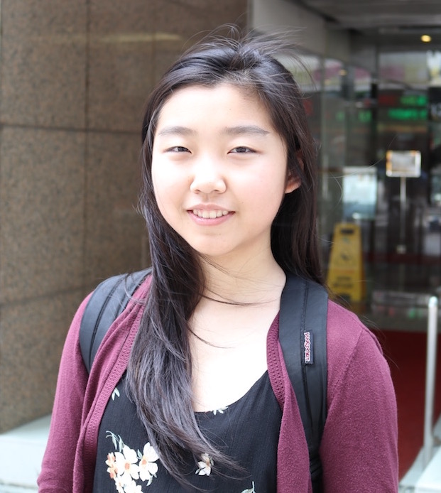

Helen Jin
Research Interests: Explainable AI (XAI) × Education, Trustworthy AI, Human & Machine Understanding, Cognition, Education ☀️
Welcome! I am a Ph.D. candidate in Computer and Information Science (CIS) at the University of Pennsylvania, where I am extremely grateful to be co-advised by Prof. Boon Thau Loo and Prof. Seiji Isotani. I am also affiliated with Penn NLP, ASSET, and BrachioLab. Previously, I earned my B.A. from Columbia University ♔, with a double major in Mathematics and Computer Science and a concentration in East Asian Languages and Cultures (EALAC).
My research lies at the intersection of trustworthy AI, human and machine understanding, and education, guided by two fundamental questions:
- How can we establish and sustain principled trust between humans and AI systems?
- How can we assess what humans and machines truly understand?
I develop methods to evaluate the reliability, explainability, and reasoning of AI systems, examining whether they are correct for the right reasons and aligned with domain expertise, including in scientific reasoning and claim verification. More recently, my research has naturally expanded into education, more specifically AI in Education (AIED), motivated in part by my lifelong passion for teaching, my many experiences as an educator, and growing questions about how teaching and learning must evolve in the age of generative AI. My current work focuses on educational assessment and building explainable models of student success, aiming to better understand student learning and outcomes, as well as help educators provide more effective support as early as possible.
I firmly believe AI should ultimately serve humanity, not take away its joy. As we figure out how AI fits into our society (as these are still the early days!), it is pivotal that we develop both a deep understanding of the humanities and a rigorous grasp of the technology itself.
Please feel free to reach out to discuss potential collaborations and opportunities.
News & Highlights
- Nov 2026 Invited talk, "Beyond the Right Answer: Measuring Machine and Human Understanding," at the HAI101: Human x Artificial Intelligence lecture series, London School of Economics (LSE).
- Jul 2026 Reliability, Faithfulness, and the Limits of Post-hoc Explanations of Opaque Scientific Models at the ICML 2026 Workshop: Philosophy Meets Machine Learning (Seoul, South Korea).
- Jun 2026 Co-TA: Streamlining Automated Grading with Generative Rubrics and Distribution Simulation at iRAISE @ Festival of Learning 2026 (Seoul, South Korea).
- Feb 2026 Led the design and rollout of LLM-assisted oral assessments for CIS 5200: Machine Learning (~200 students), Penn's first large-scale replacement of written homework grading with oral assessments. Covered in The Daily Pennsylvanian.
- Dec 2025 Probabilistic Stability Guarantees for Feature Attributions at NeurIPS 2025 (San Diego, CA, USA).
Show moreShow less
- Nov 2025 Two papers at EMNLP 2025 (Suzhou, China): Probabilistic Soundness Guarantees and Adaptive Evaluations.
- Jun 2025 The FIX Benchmark: Extracting Features Interpretable to eXperts published in DMLR. Check out the FIX website for tutorials and more information!
- May 2025 Coming back to the Big Apple! 🍎 Started my internship at Amazon (AWS) as an Applied Scientist, working on agentic AI for security.
- Apr 2025 Named an AWS-AI ASSET Fellow.
Selected Publications
* equal contribution. Full list on Google Scholar.
Teaching Experience
“Thus it is proper to the role of the scientist that he not merely find the truth and communicate to his fellows, but that he teach, that he try to bring the most honest and most intelligible account of new knowledge to all who will try to learn.”
— J. Robert Oppenheimer
University of Pennsylvania
- Summer 2026 Guest Lecturer, CIS 1210: Data Structures and Algorithms
- Spring 2026 Teaching Assistant, CIS 5200: Machine Learning Led the design and rollout of LLM-assisted oral assessments for ~200 students, Penn's first large-scale replacement of written homework grading with oral assessments.
- Fall 2025 Teaching Assistant, EAS 2030: Engineering Ethics
- Fall 2024 Teaching Assistant, CIS 3333: Mathematics of Machine Learning
- Summer 2023 Teaching Assistant, Girls Who Invest Summer Intensive Program @ The Wharton School
- Fall 2021 Teaching Assistant, CIS 4210/5210: Artificial Intelligence Penn's largest course (~500 students); managed two sections simultaneously.
Lehman College, City University of New York
- Summer 2020 Data Science Mentor-Instructor, Pathways to Student STEM Success Program (PTS3)
Columbia University
Teaching Assistant for 10 course offerings across 6 courses as an undergraduate.
Show moreShow less
- Summer 2020 Teaching Assistant, Natural Language Processing
- Spring 2020 Teaching Assistant, Natural Language Processing
- Fall 2019 Teaching Assistant, Natural Language Processing
- Summer 2019 Teaching Assistant, Calculus III
- Summer 2019 Teaching Assistant, Calculus IV
- Spring 2019 Teaching Assistant, Linear Algebra
- Fall 2018 Teaching Assistant, Calculus III
- Spring 2018 Teaching Assistant, Calculus IV
- Fall 2017 Teaching Assistant, Calculus I
- Fall 2017 Teaching Assistant, Calculus-Based Intro to Statistics
Completed the CETLI Teaching Certificate at Penn.
Academic Service
Research Community
- Reviewer ACL, NAACL, NeurIPS, DMLR, SIGCSE, China National Conference on Computational Linguistics (CCL)
- Spring 2023 Organizer, Computational Linguistics Seminar (CLunch), University of Pennsylvania
- 2023, 2025 Conference Volunteer, NAACL 2023 and NeurIPS 2025
Department Service
- 2022–2025 Mentor and Event Coordinator, CIS Department Ph.D. Mentorship Program
- Member Computer and Information Science Doctoral Association (CISDA)
University Service
- 2021–2025 Executive Board, Graduate and Professional Student Assembly (GAPSA) Director of Cultural Programming (2024–25), Vice President of Operations (2022–23), Director of Logistics (2021–22)
- 2021–2023 Graduate Student Representative, University Council; University Committee on Honorary Degrees; University Committee on Academic Affairs; Student Advisory Group for the Environment (SAGE)
- 2021–2023 Penn Representative, Ivy+ Summit Leadership Conference
Honors & Awards
- 2025 AWS-AI ASSET Fellow, Penn Engineering ASSET Center for Trustworthy AI
- 2023–2024 Perry World House Graduate Associate, University of Pennsylvania
- 2023 Penn Wharton Innovation Fund Validation Award